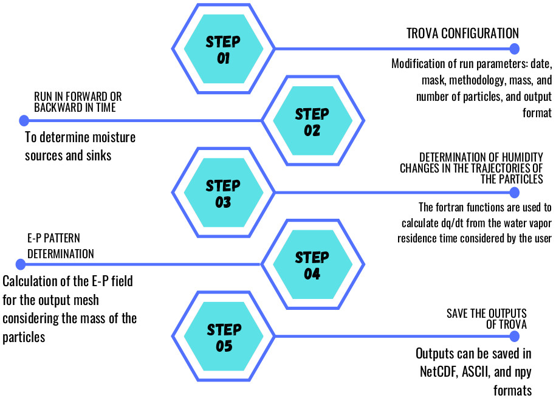

TROVA: TRansport Of water VApor
TRansport Of water VApor (TROVA) is a software developed in Python and Fortran for the study of moisture sources and sinks. It has been developed within the LAGRIMA and SETESTRELO projects at the EPhysLab (Environmental Physics Laboratory) at the University of Vigo. Subsequently, its development and updating has continued within a collaboration from the University of Vigo and the Galician Supercomputing Center. Many investigations use this software to obtain scientific results. These can be consulted at the following web address: EPhysLab Website. This is an update of the software presented by Fernández-Alvarez et al. (2022)
*****************************************************************************************
* EPhysLab (Environmental Physics Laboratory) *
* Galician Supercomputing Center, Spain *
* TRansport Of water VApor (TROVA) *
* version 1.1 (12-02-2025) *
* _____ __ ____ *
* | | | / \ \ //\ *
* | |__| / \ \ //__\ *
* | | \ \ / \ // \ *
* | | \ \____/ \__// \ *
* *
* Edificio Campus da Auga *
* University of Vigo/CESGA *
* www.ephyslab.uvigo.es/www.cesga.es *
* contact: jose.carlos.fernandez.alvarez@uvigo.es (jcfernandez@cesga.es), *
* albenis.perez.alarcon@uvigo.es *
*****************************************************************************************
TROVA Software architecture

TROVA allows the use of the FLEXible PARTicle global dispersion model and the FLEXPART-WRF regional model at different spatial resolutions. It also include the methodologies of Stohl and James (2005) and Sodemann et al. (2008). We herein refer to these methodologies as STHOL2005 and SOD2008 respectively. It contains two main modules:
1- Developed in Python that is responsible for reading the files, configuring TROVA and generating the outputs of the moisture budget (Evaporation (E)-Precipitation (P)) for the number of days selected in the simulations.
2- Developed in Fortran that is used in interface with Python so that the calculations of great computational demand are carried out in the shortest possible time. It also includes a parallel implementation using the MPI library to reduce TROVA processing time.
3- This new version includes the analysis of moisture sources and sinks by vertical layers.
For a more detailed understanding of TROVA, Figure 1 presents a flowchart where the general algorithm of the software is explained. The first step that must be carried out corresponds to the configuration of the input file where the run parameters are established. The second is to run the model forward or backward in time to determine moisture sources and sinks. The tracking mode is defined in the input file. The third step corresponds to TROVA where it reads the necessary files for tracking the particles, then performs the calculations of the changes in humidity of the particles using the functions developed in Fortran. These will allow greater computational efficiency and decrease the run time. The fourth step is calculating the E-P field on the output mesh defined by the user from the Stohl and James (2005) equation. Finally, TROVA saves the output in the user-defined format, which can be NetCDF, ASCII, or any.
{kind=link}
TROVA software functionalities
TROVA allows the study of moisture sources and sinks based on calculation of the E-P fields, using the main methodologies of Stohl and James (2005) and Sodemann et al. [2008]. In addition, TROVA provides the advantage of using different numerical outputs from FLEXPART and FLEXPART-WRF at different spatial resolutions, ensuring better representation of the E-P field to be obtained. Table 1 shows a comparison of TROVA with other software available to the scientific community: WaterSip (Fremme and Sodemann, 2019) and HAMSTER (Keune et al., 2022), in which the main differences/advantages can be observed. For more details, consult the article: Fernández-Alvarez et al. (2022).
Comparison parameters |
TROVA |
WaterSip |
HAMSTER |
Input data |
Outputs of the FLEXPART and FLEXPART-WRF forced with reanalysis and climatic scenarios |
Outputs of the FLEXPART and LAGRANTO forced with reanalysis |
Outputs of the FLEXPART model forced with reanalysis |
Input data spatial resolution |
Several (e.g. 1°, 0.25°, and 0.18°) |
1° |
1° |
Output data spatial resolution |
Several (e.g. 1°, 0.25°, and 0.18°) |
1° |
1° |
Lagrangian methodologies implemented |
STHOL2005, SOD2008 |
SOD2008 |
SOD2008 plus bias correction based on source–receptor relationships |
Use for related studies with future |
Yes |
No |
No |
Parallelization |
Yes |
Yes |
No |
Adapted for High-performance computing |
Yes |
Yes |
No |
E-P pattern by vertical layers |
Yes |
No |
No |
TROVA software validation
The TROVA software has been widely validated in the analysis of moisture sources from tropical and extratropical cyclones and atmospheric rivers for the North Atlantic basin using the methodologies mentioned above, sometimes for future climate. In these studies, the outputs of FLEXPART forced with ERA-Interim, ERA5, and climate scenarios were used as input data. In addition, it was evaluated using the methodology of Stohl and James [4] for climatological studies of the moisture sources contributing to the Iberian Peninsula and for sinks associated with the sources in the North Atlantic Ocean and the Mediterranean Sea. These results can be consulted in Fernandez-Alvarez et al. (2023).
TROVA impact
The moisture transport from ocean sources to the continents forms the link between evaporation from the ocean and precipitation over the continents, thus establishing the moisture source–sink relationship. In the context of climate change, a change in moisture transport is associated with the moisture increase derived from the increment of temperature. Therefore, the study of moisture transport is crucial for a better understanding of the observed changes and those derived from projections of future climate data. Therefore, it is important to have a set of tools for Lagrangian post-processing of different model outputs. Specifically, TROVA enables the user community to post-process these model outputs in present and future times to understand changes in the hydrological cycle. In addition, TROVA allows for the two main Lagrangian methodologies established in literature to be integrated into a single tool, thus facilitating comparison of the results obtained and proposing more conclusive results for the scientific community.
References
[1] Stohl A, James PA. A Lagrangian analysis of the atmospheric branch of the global water cycle: Part II: Earth’s river catchments ocean basins, and moisture transports between them. J. Hydrometeorol. 2005; 6:961–984. https://doi.org/10.1175/JHM470.1.
[2] Sodemann H, Schwierz C, Wernli H. Interannual variability of Greenland winter precipitation sources: Lagrangian moisture diagnostic and North Atlantic Oscillation influence. J. Geophys. Res.-Atmos. 2008; 113:D03107. https://doi.org/10.1029/2007JD008503.
[3] Fernández-Alvarez, J. C., Pérez-Alarcón, A., Nieto, R., & Gimeno, L. (2022). TROVA: TRansport of water VApor. SoftwareX, 20, 101228. https://doi.org/10.1016/j.softx.2022.101228.
[4] Keune J, Schumacher DL., Miralles DG. A unified framework to estimate the origins of atmospheric moisture and heat using Lagrangian models. Geosci. Model Dev. 2022; 15:1875-1898.https://doi.org/10.5194/gmd-15-1875-2022.
[5] Fremme A, Sodemann H. The role of land and ocean evaporation on the variability of precipitation in the Yangtze River valley. Hydrol. Earth Syst. Sci. 2019; 23:2525-2540.https://doi.org/10.5194/hess-23-2525-2019.
[6] Fernández-Alvarez, J.C., Pérez-Alarcón, A., Eiras-Barca, J. et al. Projected changes in atmospheric moisture transport contributions associated with climate warming in the North Atlantic. Nat Commun 14, 6476 (2023). https://doi.org/10.1038/s41467-023-41915-1